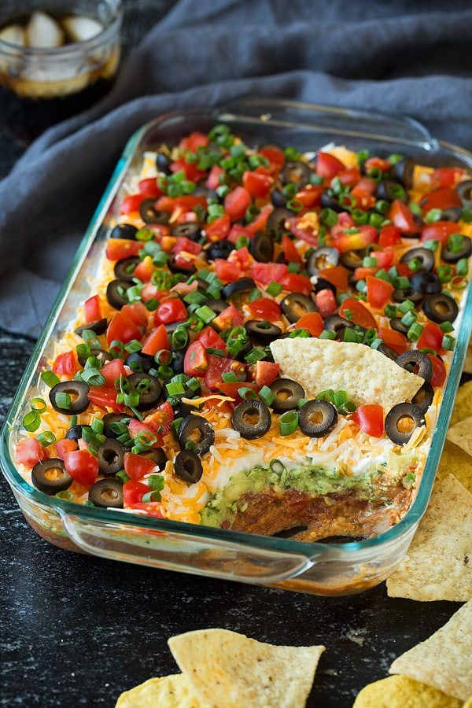

The 2023 Bean Dip recipe sweeping the nation
This recipe will put aunt Kim and cousin Sheila to shame.
AND its quite simple

This dish is a fan favorite at superbowl events, bachelor parties,
and birthdays. Everyone loves bean dip.
The ingredients are as follows:
- Beans
- Guac
- Queso Cheese
- Salsa
- Sour Cream
- Shredded Cheese
- Nacho Chips
The steps to make it are quite easy too
- Gather ingredients and large enough bowl
- Add base of bean dip to bottom of bowl
- Add guac, queso, salsa, sour cream, and shredded cheese
- Start serving with nachos!